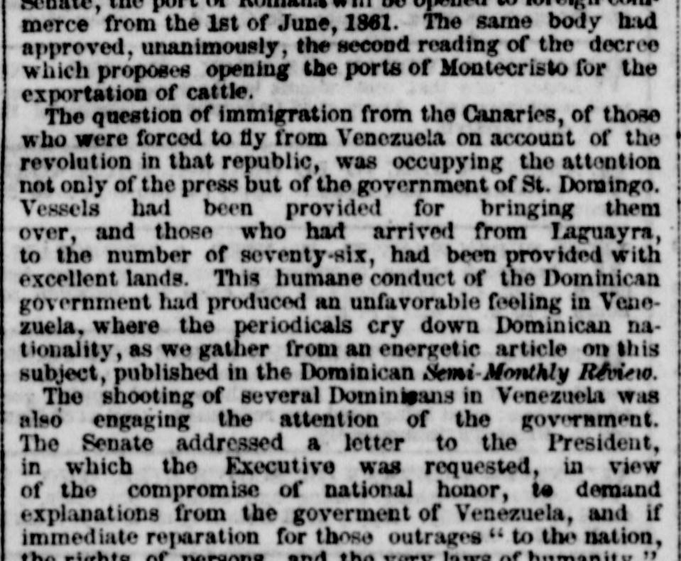
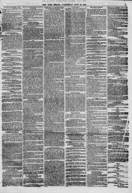

The Senate addressed a letter to the 1 "resident, in whichEl Senado dirigió una carta al Presidente, en la cual
The New York Herald. New York [N.Y.], June 20, 1860. Page 5. View the originalVer el original


See the full pageVer la página completaThe Dominican Senate requested the President to demand explanations and immediate reparation from Venezuela regarding the shooting of several Dominicans, warning that recourse would otherwise be taken. The President replied that no expostulations or reprisals were warranted because the individuals had abandoned their nationality and entered the enemy's ranks, noting further that letters from Venezuela asserted those men had actually been killed in battle rather than executed. Additionally, the press advocated for establishing a bank to suppress paper money, and the value of the gold ounce was fixed at 4,000 national dollars.El Senado dominicano solicitó al presidente que exigiera explicaciones y reparación inmediata a Venezuela con respecto al fusilamiento de varios dominicanos, advirtiendo que de lo contrario se recurriría a otras medidas. El presidente respondió que no se justificaban protestas ni represalias dado que tales individuos habían renunciado a su nacionalidad y se habían sumado a las filas enemigas, señalando además que cartas procedentes de Venezuela aseguraban que esos hombres en realidad habían muerto en combate y no fusilados. Por otra parte, la prensa abogó por la fundación de un banco para retirar el papel moneda, y el valor de la onza de oro se fijó en 4.000 pesos nacionales.
FULL TEXT:TEXTO COMPLETO:
country for political opinions; and by another from the Senate, the port of Romana will be opened to foreign commerce from the 1st of June, 1861. The same body had approved, unanimously, the second reading of the decree which proposes opening the ports of Montecristo for the exportation of cattle.país por opiniones políticas; y por otro del Senado, el puerto de Romana será abierto al comercio extranjero desde el 1 de junio de 1861. El mismo cuerpo había aprobado, unánimemente, la segunda lectura del decreto que propone abrir los puertos de Montecristo para la exportación de ganado.
The question of immigration from the Canaries, of those who were forced to fly from Venezuela on account of the revolution in that republic, was occupying the attention not only of the press but of the government of St. Domingo. Vessels had been provided for bringing them over, and those who had arrived from Laguayra, to the number of seventy-six, had been provided with excellent lands. This humane conduct of the Dominican government had produced an unfavorable feeling in Venezuela, where the periodicals cry down Dominican nationality, as we gather from an energetic article on this subject, published in the Dominican Semi-Monthly Review.La cuestión de inmigración de las Canarias, de aquellos que fueron forzados a huir de Venezuela por cuenta de la revolución en esa república, estaba ocupando la atención no solo de la prensa sino del gobierno de Santo Domingo. Buques habían sido provistos para traerlos, y aquellos que habían llegado de La Guaira, en número de setenta y seis, habían sido provistos con tierras excelentes. Esta conducta humana del gobierno dominicano había producido un sentimiento desfavorable en Venezuela, donde los periódicos desacreditan la nacionalidad dominicana, como recogemos de un artículo enérgico sobre este tema, publicado en la Revista Semestral Dominicana.
The shooting of several Dominicans in Venezuela was also engaging the attention of the government. The Senate addressed a letter to the President, in which the Executive was requested, in view of the compromise of national honor, to demand explanations from the goverment of Venezuela, and if immediate reparation for those outrages "to the nation, the rights of persons, and the very laws of humanity," was not made, recourse would be had, as a last resource, to the right of reprisal, and the Venezuelans residing in St. Domingo would be treated in like manner. His Excellency replied, reminding the Senate that they were not treating of a general measure of the Venezuelan government against every Dominican, but of a chastisment inflicted on individuals who had abandoned their nationality and had entered the enemy's ranks, on which account there could be neither expostulations nor reprisals. This reply had called forth a vote of thanks from the resident Venezuelans; and, moreover, it appears that letters received from Venezuela assert that the Dominicans in question were not executed, but had been killed in battle, with the exception of one who was assassinated by a party of marauders.El fusilamiento de varios dominicanos en Venezuela también estaba ocupando la atención del gobierno. El Senado dirigió una carta al Presidente, en la cual se solicitaba al Ejecutivo, en vista del compromiso del honor nacional, demandar explicaciones del gobierno de Venezuela, y si no se hacía reparación inmediata por esos ultrajes «a la nación, los derechos de las personas, y las propias leyes de la humanidad», se recurriría, como último recurso, al derecho de represalia, y los venezolanos residentes en Santo Domingo serían tratados de igual manera. Su Excelencia respondió, recordando al Senado que no trataban de una medida general del gobierno venezolano contra todo dominicano, sino de un castigo infligido a individuos que habían abandonado su nacionalidad y habían entrado en las filas del enemigo, por cuya cuenta no podría haber ni expostulaciones ni represalias. Esta respuesta había provocado un voto de gracias de los venezolanos residentes; y, además, parece que cartas recibidas de Venezuela afirman que los dominicanos en cuestión no fueron ejecutados, sino que habían sido muertos en batalla, con la excepción de uno que fue asesinado por una partida de merodeadores.
Finally, the press warmly advocates the establishment of a bank as the best means for suppressing the paper money in circulation, which occasions serious inconvenience to the government and citizens. To regulate the operations of the public administration, the value of the gold ounce is fixed at 4,000 national dollars each.Finalmente, la prensa aboga cálidamente el establecimiento de un banco como el mejor medio para suprimir el papel moneda en circulación, que ocasiona inconveniente serio al gobierno y los ciudadanos. Para regular las operaciones de la administración pública, el valor de la onza de oro se fija en 4,000 dólares nacionales cada una.